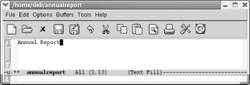
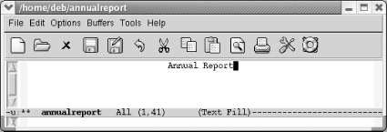
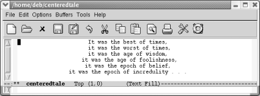

{% include JB/setup %}
{% raw %}
<div>
<div class="book" xml:lang="en"><div class="book"><div class="book"><div class="book"><h1 class="title"><a id="gnu3-CHP-7-SECT-3" class="calibre1"></a>Centering Text</h1></div></div></div><p class="copyright">Another common formatting task is
<a id="gnu3-CHP-7-ITERM-2335" class="calibre2"></a>
            <a id="gnu3-CHP-7-ITERM-2336" class="calibre2"></a>centering
text. For example, you might want to center the title of a document
or individual headings within a document. Emacs provides commands to
center lines, paragraphs, and regions.</p><p class="copyright">In text mode, you can center a line by <a id="gnu3-CHP-7-ITERM-2337" class="calibre2"></a>simply typing the line you want to
center (or moving anywhere on an existing line), and then pressing
<span><strong class="calibre5">M-s</strong></span>.</p><div class="book"><a id="ch07-26-fm2xml" class="calibre2"></a><table class="calibre8"><colgroup class="calibre9"><col class="calibre10"/></colgroup><tbody class="calibre15"><tr class="calibre12"><td class="calibre17">
                        <p class="copyright">Type: <span><strong class="calibre5">Annual Report</strong></span>
                        </p>
                     </td></tr><tr class="calibre12"><td class="calibre17">
                        <p class="copyright">
                           </p><div class="book"><div class="mediaobject"><a id="I_7_tt210" class="calibre2"></a></div></div><p class="copyright">
                        </p>
                     </td></tr><tr class="calibre12"><td class="calibre19">
                        <p class="copyright">You type the document's title.</p>
                     </td></tr></tbody></table></div><div class="book"><a id="ch07-27-fm2xml" class="calibre2"></a><table class="calibre8"><colgroup class="calibre9"><col class="calibre10"/></colgroup><tbody class="calibre15"><tr class="calibre12"><td class="calibre17">
                        <p class="copyright">Type: <span><strong class="calibre5">M-s</strong></span>
                        </p>
                     </td></tr><tr class="calibre12"><td class="calibre17">
                        <p class="copyright">
                           </p><div class="book"><div class="mediaobject"><a id="I_7_tt211" class="calibre2"></a></div></div><p class="copyright">
                        </p>
                     </td></tr><tr class="calibre12"><td class="calibre19">
                        <p class="copyright">Emacs centers the line.</p>
                     </td></tr></tbody></table></div><p class="copyright">You can also center paragraphs
<a id="gnu3-CHP-7-ITERM-2338" class="calibre2"></a>
            <a id="gnu3-CHP-7-ITERM-2339" class="calibre2"></a>and
regions. In both cases, Emacs does line-by-line centering rather than
block centering. To center a paragraph, use the command <span><strong class="calibre5">M-S</strong></span> (for <span><strong class="calibre5">center-paragraph</strong></span>); to center a region, use
<span><strong class="calibre5">M-x</strong></span> 
            <span><strong class="calibre5">center-region</strong></span>. For example,
let's say you want to center the following
quotation.</p><div class="book"><a id="ch07-28-fm2xml" class="calibre2"></a><table class="calibre8"><colgroup class="calibre9"><col class="calibre10"/></colgroup><tbody class="calibre15"><tr class="calibre12"><td class="calibre17">
                        <p class="copyright">Type: <span><strong class="calibre5">M-S</strong></span>
                        </p>
                     </td></tr><tr class="calibre12"><td class="calibre17">
                        <p class="copyright">
                           </p><div class="book"><div class="mediaobject"><a id="I_7_tt212" class="calibre2"></a></div></div><p class="copyright">
                        </p>
                     </td></tr><tr class="calibre12"><td class="calibre19">
                        <p class="copyright">Text is now centered.</p>
                     </td></tr></tbody></table></div><p class="copyright">In this case, line-by-line
<a id="gnu3-CHP-7-ITERM-2340" class="calibre2"></a>centering
looks rather artistic. But there are times when you might wish Emacs
did block centering. You can replicate this effect by using the
<span><strong class="calibre5">indent-rigidly</strong></span> command, discussed
earlier in this chapter. You just have to play with the indentation
to see how far the block of text should be indented to look centered.</p><p class="copyright">There's one more choice for centering. You can
change justification by choosing Edit<span>→</span> Text
Properties<span>→</span> Justification<span>→</span> Center. This command
works on whatever text is selected.</p><p class="copyright">
            <a class="calibre2" href="ch07s03.html#gnu3-CHP-7-TABLE-3" title="Table 7-3. Centering commands">Table 7-3</a> lists the commands used to center text.</p><div class="book"><a id="gnu3-CHP-7-TABLE-3" class="calibre2"></a><p class="title2"><b class="calibre25">Table 7-3. Centering commands</b></p><div class="table-contents"><table summary="Centering commands" class="calibre8"><colgroup class="calibre9"><col class="calibre10"/><col class="calibre10"/><col class="calibre10"/></colgroup><thead class="calibre11"><tr class="calibre12"><th class="calibre26">
                        <p class="copyright">Keystrokes</p>
                     </th><th class="calibre26">
                        <p class="copyright">Command name</p>
                     </th><th class="calibre27">
                        <p class="copyright">Action</p>
                     </th></tr></thead><tbody class="calibre15"><tr class="calibre12"><td class="calibre28">
                        <p class="copyright">
                           <span><strong class="calibre5">M-s</strong></span>
                        </p>
                     </td><td class="calibre28">
                        <p class="copyright">
                           <span><strong class="calibre5">center-line</strong></span>
                        </p>
                     </td><td class="calibre29">
                        <p class="copyright">Center the line the cursor is on.</p>
                     </td></tr><tr class="calibre12"><td class="calibre28">
                        <p class="copyright">
                           <span><strong class="calibre5">M-S</strong></span>
                        </p>
                     </td><td class="calibre28">
                        <p class="copyright">
                           <span><strong class="calibre5">center-paragraph</strong></span>
                        </p>
                     </td><td class="calibre29">
                        <p class="copyright">Center the paragraph the cursor is on.</p>
                     </td></tr><tr class="calibre12"><td class="calibre28">
                        <p class="copyright">(none)</p>
                     </td><td class="calibre28">
                        <p class="copyright">
                           <span><strong class="calibre5">center-region</strong></span>
                        </p>
                     </td><td class="calibre29">
                        <p class="copyright">Center the currently defined region.</p>
                     </td></tr><tr class="calibre12"><td class="calibre30">
                        <p class="copyright">(none)<span><em class="calibre7">Edit</em></span>
                           <span>→</span> 
                           <span><em class="calibre7">Text
Properties</em></span>
                           <span>→</span>
                           <span><em class="calibre7">Justification</em></span>
                           <span>→</span>
                           <span><em class="calibre7">Center</em></span>
                        </p>
                     </td><td class="calibre30">
                        <p class="copyright">
                           <span><strong class="calibre5">set-justification-center</strong></span>
                        </p>
                     </td><td class="calibre31">
                        <p class="copyright">Center selected text.</p>
                     </td></tr></tbody></table></div></div><br class="book"/></div></div>

{% endraw %}

